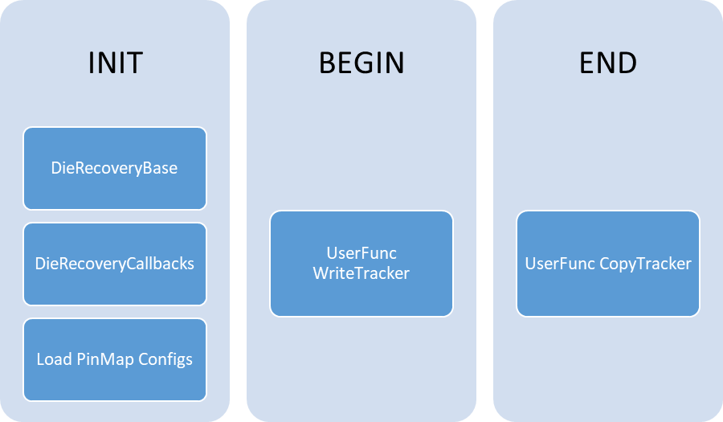

INIT Flow
Test iCUserFuncTest LoadIaCoreNoaDieRecoveryPinMaps
{
function_name = "CPD_DEBUG!ExecPrimeCsCallback";
function_parameter = "LoadPinMapFile(--decoder PinToSliceIndexDecoder --file ./PrimeConfigs/PinMaps_IACORE_NOA.json)";
}
Begin (or Start?) Flow
Test iCUserFuncTest InitTrackerLiteral
{
function_name = "CPD_DEBUG!ExecPrimeCsCallback";
function_parameter = "WriteTracker(--tracker MyTracker --value 0011)";
}
Test iCUserFuncTest InitCoreTrackerFromGsds
{
function_name = "CPD_DEBUG!ExecPrimeCsCallback";
function_parameter = "WriteTracker(--tracker CORE0,CORE1,CORE2,CORE3,CORE4,CORE5,CORE6,CORE7 --gsds G.U.S.DFFCHECK_SLICE)";
}
Test iCUserFuncTest InitCoreTrackerFromDff
{
function_name = "CPD_DEBUG!ExecPrimeCsCallback";
function_parameter = "WriteTracker(--tracker TRACKERNAME --dff *dieid*.*optype*.*tokenname*)";
}
End Flow
Copies the Tracker value to a GSDS Token, DFF Token, or HDMT User Variable.
Can be anywhere in the flow.
Argument is a single string, fields are space separated. See Callback section for more details.
List of fields (Tracker is required, at least one of GsdsToken/DffToken/UserVar is required (more are fine))
Example GSDS
Test iCUserFuncTest CopyCoreTrackerToGsds
{
function_name = "CPD_DEBUG!ExecPrimeCsCallback";
function_parameter =
"G.U.S.Dummy=CopyTracker(--tracker CORE0,CORE1,CORE2,CORE3,CORE4,CORE5,CORE6,CORE7 --gsds G.U.S.DFFCHECK_SLICE)";
}
Example DFF
Test iCUserFuncTest CopyCoreTrackerToDff
{
function_name = "CPD_DEBUG!ExecPrimeCsCallback";
function_parameter = " CopyTracker(--tracker TRACKERNAME --dff ID1.SOMETOKEN)";
}
see the VminTC document for the latest, these parameters might be out-of-date and are only for examples.
Example
Test VminTC TRANS_CORE_VMIN_K_CHKCRF3_0808XX_VCORE_F3_2200_PRIME_1504
{
TestMode = "MultiVmin";
CornerIdentifiers = "CR0@F3,CR1@F3,CR2@F3,CR3@F3";
FlowNumber = "4";
VoltageTargets = "CORE0,CORE1,CORE2,CORE3";
StartVoltages = "0.55,0.55,0.55,0.55";
EndVoltageLimits = "1.35V,1.35V,1.35V,1.35V";
StepSize = "0.01";
ForwardingMode = "Merge";
FeatureSwitchSettings = "fivr_mode_on,disable_cores";
VoltageOverrides = "GT:0.6";
FivrCondition = "NOM";
LevelsTc = "SCN_CORE_PRIME::IO_DDR_univ_lvl_nom_lvl_SHARED_511E5BCD2BB65B457E04277F92FBBF5C77C6395E0D1AA5DDC416894A5DF4D1E4";
TimingsTc = "SCN_CORE_PRIME::cpu_func_sdr_univ_sta_univ_univ_b100_t100_d100_SHARED_0F9EB791BB9B601C383F5D7133A2C4CB6763527F7EB0E7EE842D9A424872470D";
Patlist = "scn_core_x_vccc_f3_chkcrf3_mEn100_tk6_core_trans_classhvm_list";
ScoreboardBaseNumber = 3059;
PatternNameMap = "1,2,3,4,5,6,7";
ScoreboardMaxFails = 20;
ScoreboardEdgeTicks = 3;
LogLevel = "PRIME_DEBUG";
### DIE_RECOVERY OPTIONS ###_
RecoveryTracking = "CORE0,CORE1,CORE2,CORE3";
PinMap = "CORE0_NOA,CORE1_NOA,CORE2_NOA,CORE3_NOA";
InitialMaskBits = "0000";
RecoveryOptions = "CoreDefeaturingVector,2";
}
RecoveryTracking - Comma separated Names of the DieRecovery Trackers. Needs to match the "Name" field of one of the trackers from the TrackerFile.
PinMap - Comma separated names of the PinMaps. Needs to match with the "Name" fied from one of the pinmap decoder files
InitialMaskBits - Raw bitmask Combined (OR'd) with the tracker value to set the initial mask for testing.
RecoveryOptions - This is the DieRecovery Rules to run after the search.
See the separate DieRecoveryCallbacks document for details on what functions are available.
{
"Trackers": [
{ "Name": "SliceTracking", "Size": 8, "InitialValue": "00001111" },
{ "Name": "CORE0", "Size": 1, "InitialValue": "0" },
{ "Name": "CORE1", "Size": 1, "InitialValue": "0" },
{ "Name": "CORE2", "Size": 1, "InitialValue": "0" },
{ "Name": "CORE3", "Size": 1, "InitialValue": "0" },
{ "Name": "CORE4", "Size": 1, "InitialValue": "1" },
{ "Name": "CORE5", "Size": 1, "InitialValue": "1" },
{ "Name": "CORE6", "Size": 1, "InitialValue": "1" },
{ "Name": "CORE7", "Size": 1, "InitialValue": "1" }
{ "Name": "SLICE0", "Size": 1, "InitialValue": "0", "LinkDisable": [ "ATOM_M0", "ATOM_M1", "SLICE1" ] },
{ "Name": "SLICE1", "Size": 1, "InitialValue": "0", "LinkDisable": [ "ATOM_M0", "ATOM_M1", "SLICE0" ] },
{ "Name": "ATOM_M0", "Size": 4, "InitialValue": "0000" },
{ "Name": "ATOM_M1", "Size": 4, "InitialValue": "0000" }
]
}
PinMap Instances are now created through the LoadPinMapFile callback function.
Only one Type of PinMap can be loaded with each instance of the callback.
Pinmaps of the same type can be grouped in a single file or split into multiple files.
There is no restriction on the number or ordering of the callback instances. Create as many as needed to load all the Pinmaps.
PinMaps are stored and referenced using their “Name” field so that must be unique.
Callback to load pin map files:
PinMap Fields
Example PinMap Config files
[
{
"Name":"CORE0_NOA", "PatternModify":"CORE_DISABLE0", "Size":1,
"PinToSliceIndexMap":{"IP_CPU::NOAB_00":[0],"NOAB_00":[0],"IP_CPU::NOAB_08":[0],"NOAB_08":[0]}
},
{
"Name":"CORE1_NOA", "PatternModify":"CORE_DISABLE1", "Size":1,
"PinToSliceIndexMap":{"IP_CPU::NOAB_01":[0],"NOAB_01":[0],"IP_CPU::NOAB_09":[0],"NOAB_09":[0]}
},
{
"Name":"SLICE0_NOA", "PatternModify":"SLICE_DISABLE0", "Size":1,
"PinToSliceIndexMap":{"IP_CPU::NOAB_00":[0],"NOAB_00":[0],"IP_CPU::NOAB_08":[0],"NOAB_08":[0]},
"DoaPins": ["IP_CPU::TDO"]
},
{
"Name":"SLICE1_NOA", "PatternModify":"SLICE_DISABLE1", "Size":1,
"PinToSliceIndexMap": {"IP_CPU::NOAB_01":[0], "NOAB_01":[0], "IP_CPU::NOAB_09":[0], "NOAB_09":[0]},
"DoaPins": ["IP_CPU::TDO"]
},
{
"Name":"FAKE_EXAMPLE_MULTIBIT", "PatternModify": "NOT_A_REAL_PATCFG", "Size": 10,
"PinToSliceIndexMap": {"PIN_ODDCORES":[1,3,5,7,9], "PIN_EVENCORES":[0,2,4,6,8]}
}
]
[
{
"Name":"CORE0_SCAN", "PatternModify":"CORE_DISABLE0", "Size":1
},
{
"Name":"CORE1_SCAN", "PatternModify":"CORE_DISABLE1", "Size":1
},
{
"Name":"SLICE0_SCAN", "PatternModify":"SLICE_DISABLE0", "Size":1
},
{
"Name":"SLICE1_SCAN", "PatternModify":"SLICE_DISABLE1", "Size":1
},
{
"Name":"FAIL_ONLYIF_NOA_FAILS", "PatternModify":"SLICE_DISABLEALL", "Size":1,
“PinList”: [“NOA0”, “NOA1”, “NOA2”, “NOA3”, “NOA4”, “NOA5”, “NOA6”, “NOA7”]
}
]
[
{
"Name":"ATOMARRAY_MOD0", "PatternModify":"NONE", "Size":4,
"Module":0, "Content":"ARRAY", "Pin":"IP_CPU::NOA08"
},
{
"Name":"ATOMARRAY_MOD1", "PatternModify":"NONE", "Size":4,
"Module":1, "Content":"ARRAY", "Pin":"IP_CPU::NOA09"
},
{
"Name":"ATOMFUNC_MOD0", "PatternModify":"NONE", "Size":4,
"Module":0, "Content":"FUNC", "Pin":"IP_CPU::NOA08"
},
{
"Name":"ATOMFUNC_MOD1", "PatternModify":"NONE", "Size":4,
"Module":1, "Content":"FUNC", "Pin":"IP_CPU::NOA09"
}
]
* other pinmap decoders can be added by users so this list might not be complete *
<?xml version= "1.0" encoding= "utf-8"?>
<recovery>
<defeaturing_rules>
<!-- Used for Die Recovery to look for a matching combination for an specific SliceTracking -->
<!-- Index size is 8-bits (7-0) as MSB>LSB, TGL42 is 4Core so top 4 bits are set to "1" = DISABLED -->
<rules name = "CoreDefeaturingVector" index= "0-7" >
<rule mode = "ValidCombinations" name = "4C" size = "4" type= "FullyFeatured">
<bitvector value = "00001111"/>
</rule>
<rule mode = "ValidCombinations" name = "2C" size = "2" type= "Recovery">
<bitvector value = "00111111"/>
<bitvector value = "11001111"/>
</rule>
</rules>
</defeaturing_rules>
</recovery>
test – The Prime IFunctionalTest object that was executed. This can be casted to any of its child types to access fail or capture memory. For Example:
var captureFailureTest = test as ICaptureFailureTest;
if (captureFailureTest == null)
{
throw new ArgumentException(…);
}
currentSlice – For content types that execute one core/slice/ip at a time, this will be set to the current core/slice/ip. Most IPinMapDecoder classes can ignore this.
Returns